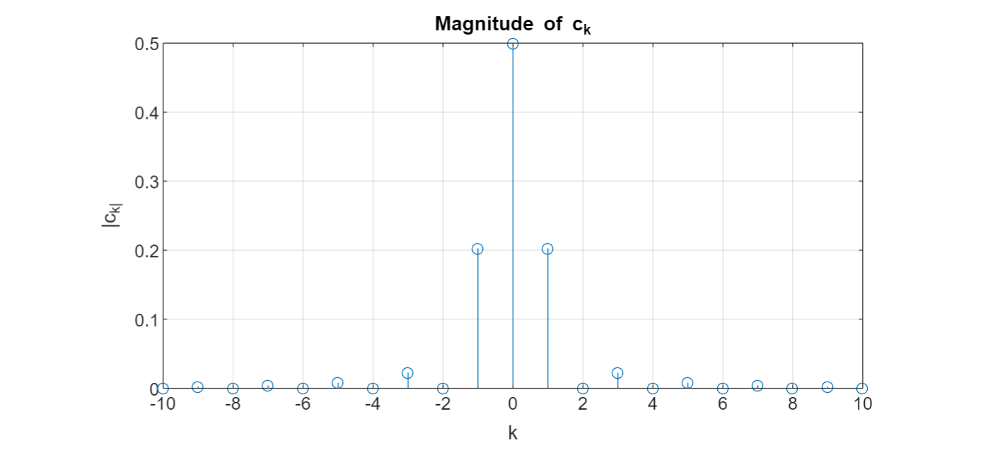

การหาอนุกรมฟูเรียร์ (Fourier Series) ของสัญญาณคาบเวลา และตัวอย่างการเขียนโค้ดด้วย MATLAB และ Python#
▷ Fourier Series#
สัญญาณต่อเนื่องเชิงเวลาและเป็นสัญญาณคาบ มีคุณสมบัติดังนี้
โดยที่ คือ คาบของสัญญาณ (Period)
สัญญาณคาบสามารถเขียนให้อยู่ในรูปแบบของอนุกรมฟูเรียร์ (Fourier Series) ถ้าเป็นไปตามเงื่อนไขของ Dirichlet เช่น ฟังก์ชัน สามารถหาค่าอินทิเกรตได้ในช่วงหนึ่งคาบได้
อนุกรมฟูเรียร์ของสัญญาณคาบ ที่มีความถี่มูลฐาน หรือคาบ มีรูปแบบดังนี้ (Exponential Complex Form of Fourier Series)
และสัมประสิทธิ์เชิงซ้อน (Complex Coefficients) ของอนุกรมฟูเรียร์สำหรับสัญญาณ มีสูตรการคำนวณดังนี้
ถ้าใช้สูตรของ Euler
สัมประสิทธิ์เชิงซ้อนสามารถเขียนได้ใหม่ ดังนี้
โดยที่
ถ้าจะเปลี่ยนจากสัมประสิทธิ์ มาเป็นสัมประสิทธิ์ และ ที่เป็นเลขจำนวนจริง ก็สามารถเขียนฟังก์ชัน ในรูปแบบของอนุกรมฟูเรียร์ได้ใหม่ดังนี้ (เรียกรูปแบบนี้ว่า Trigonometric Form of Fourier Series)
ถ้ากำหนดให้
และใช้สูตรตรีโกณมิติต่อไปนี้
ดังนั้น จึงเขียนอยู่ในรูปใหม่ดังนี้
▷ สัญญาณคาบ: Sine & Cosine#
ถ้าเป็นรูปคลื่นไซน์ที่มีคาบเท่ากับ และ
จะได้ค่าสัมประสิทธิ์ (ในกรณีนี้ ไม่จำเป็นต้องใช้การอินทิเกรต)
ถ้าเป็นฟังก์ชันโคไซน์
จะได้ค่าสัมประสิทธิ์
▷ สัญญาณคาบ: สัญญาณรูปสามเหลี่ยม#
สัญญาณคาบเวลาที่มีลักษณะเป็นรูปสามเหลี่ยม (Triangular Waveform) สามารถเขียนให้อยู่ในรูปแบบของฟังก์ชันทางคณิตศาสตร์ได้ดังนี้
รูป: สัญญาณรูปสามเหลี่ยม ในช่วง
ลองมาดูวิธีการคำนวณหาค่าสัมประสิทธิ์ของอนุกรมฟูเรียร์สำหรับฟังก์ชันนี้
เริ่มต้นด้วยสูตรการอินทิเกรตต่อไปนี้ก่อน
จากนั้นจึงเริ่มคำนวณ โดยพิจารณาเลือกคาบเวลาอยู่ในช่วง ซึ่งจะทำได้ง่ายกว่าการคำนวณ สำหรับฟังก์ชันรูปสามเหลี่ยมในกรณีนี้ เนื่องจากเป็นฟังก์ชันคู่
และได้
▷ ตัวอย่างการเขียนโค้ด MATLAB และสัญญาณรูปสามเหลี่ยม#
ตัวอย่างการเขียนโค้ด MATLAB มีดังนี้ เริ่มต้นด้วยการประกาศใช้ตัวแปรเชิงสัญลักษณ์ (Symbolic Variables) เช่น สัญลักษณ์ (ตัวแปรอิสระซึ่งเป็นเวลา) (คาบ) และ (แอมพลิจูด) จากนั้นสร้างฟังก์ชัน สำหรับหนึ่งคาบของสัญญาณ ซึ่งเป็นฟังก์ชันแบบ piecewise และในตัวอย่างนี้มีลักษณะเป็นรูปสามเหลี่ยม และนำไปใช้ในการสร้างฟังก์ชันที่มีคาบ
เมื่อสร้างฟังก์ชัน แล้ว จึงนำไปแสดงรูปกราฟของฟังก์ชันโดยใช้คำสั่ง
fplot() และแสดงค่าในช่วง
และกำหนดค่าตัวเลขให้พารามิเตอร์ ให้เท่ากับ 1 และ เท่ากับ 1
%%%%%%%%%%%%%%%%%%%%%%%%%%%%%%%%%%%%%%%%%%%%%%%%%%%%%%%%%%%%%
% clear variables, clear the command window, clear figures
clearvars; clc; clf; close all;
%%%%%%%%%%%%%%%%%%%%%%%%%%%%%%%%%%%%%%%%%%%%%%%%%%%%%%%%%%%%%
% Code Section 1
syms t real;
syms T A positive;
% Define a triangular-shape function x_T(t) for t in [0,T).
x_T(t) = piecewise( 0 <= t & t < T/2, 2*A*t/T,...
T/2 <= t & t < T, 2*A*(1-t/T) );
% Define x(t) as a periodic function.
x(t) = x_T( mod(t,T) );
% Set the specific values for the parameters A and T.
params = [A,T];
values = [1,1];
% Set the range for t.
t_range = [-2,2];
% Plot the x(t) function for A=1, T=1 and t in [-2,2]
figure;
fplot( subs(x(t), params, values), t_range, 'linewidth', 1.5),
axis equal, xlabel('t'), ylabel('x(t)'), grid on;
% Use custom labels.
custom_x_labels = {'-2T', '-T', '0', 'T', '2T'};
xticks(linspace( t_range(1), t_range(2), numel(custom_x_labels)));
xticklabels(custom_x_labels);
custom_y_labels = {'0','A'};
y_range = [0, eval(subs(A, params, values))];
yticks(linspace( y_range(1), y_range(2), numel(custom_y_labels)))
yticklabels(custom_y_labels);
ถัดไปเป็นการคำนวณค่าสัมประสิทธิ์ของอนุกรมฟูเรียร์ รวมถึง และ ด้วย
%%%%%%%%%%%%%%%%%%%%%%%%%%%%%%%%%%%%%%%%%%%%%%%%%%%%%%%%%%%%%
% Code Section 2
syms k integer;
syms m integer;
omega_0 = 2*pi/T;
% Compute the complex coefficients of the Fourier Series.
c_k = (1/T)*int( x_T(t) * exp(-1j*k*omega_0*t),t,[0,T]);
c_k = simplify( c_k, 'Steps', 100 );
c_k_odd = simplify( subs(c_k, k, 2*m+1) );
c_k_even = simplify( subs(c_k, k, 2*m ) );
% Compute the a_k coefficients of the Fourier Series.
a_k = simplify( (2/T)*int( x_T(t) * cos(k*omega_0*t),t,[0,T]) );
% Compute the a_0 coefficient of the Fourier Series.
a_0 = (1/T) * int( x_T(t), t, [0,T] );
% Compute the b_k coefficients of the Fourier Series.
b_k = simplify( (2/T)*int( x_T(t) * sin(k*omega_0*t),t,[0,T]) );
% Show the coefficients
c_k, c_k_odd, c_k_even, a_k, b_k, a_0
รูป: ตัวอย่างเอาต์พุตจากการรันโค้ด MATLAB
จากข้อความเอาต์พุต จะได้สัมประสิทธิ์ของอนุกรมฟูเรียร์สำหรับ
เมื่อได้คำนวณค่าสัมประสิทธิ์ ก็สามารถเขียนฟังก์ชัน ให้อยู่ในรูปแบบของอนุกรมฟูเรียร์ ถ้าจะลองสร้างฟังก์ชัน จากอนุกรมฟูเรียร์ของ สำหรับ ก็มีตัวอย่างดังนี้
%%%%%%%%%%%%%%%%%%%%%%%%%%%%%%%%%%%%%%%%%%%%%%%%%%%%%%%%%%%%%
% Code Section 3
% Plot a Fourier Series with k=0,1..,K.
K = 5;
y(t) = A/2;
for k=1:1:K
y(t) = y(t) + 2*A*((-1)^k-1)/(pi*k)^2 * cos(k*omega_0*t);
end
figure;
fplot( subs(y(t),params,values), t_range, 'linewidth', 1.5 ),
axis equal, xlabel('t'),
ylabel('y(t)'), ylim(y_range), grid on;
รูป: กราฟของฟังก์ชัน
ถัดไปเป็นตัวอย่างโค้ดสำหรับวาดรูปกราฟสำหรับค่าสัมประสิทธิ์
syms k integer;
c_k = A*((-1)^k-1)/(k*pi)^2;
K = 10;
ks = 1:1:K;
c_k = [subs(c_k,k,flip(-ks)),A/2,subs(c_k,k,ks)];
figure( 'Position', [100,100,1000,480])
stem( [flip(-ks),0,ks], abs( subs(c_k,A,1) ) );
xlabel('k');
ylabel('| c_k |');
title('Magnitude of c_k');
grid on;

รูป: กราฟของฟังก์ชัน (Magnitude Plot)
▷ ตัวอย่างการเขียนโค้ด Python และสัญญาณรูปสามเหลี่ยม#
ถัดไปเป็นตัวอย่างโค้ด Python ใช้ NumPy / SciPy และ SymPy ซึ่งจะให้ผลการทำงานคล้ายกับโค้ดที่เขียนด้วย MATLAB
โค้ดในส่วนแรกเป็นการสร้างฟังก์ชัน และ ตามลำดับ จากนั้นก็แสดงรูปกราฟของฟังก์ชันดังกล่าว
import sympy as sp
import numpy as np
import matplotlib.pyplot as plt
# Define symbolic variables
t, T, A = sp.symbols('t T A', real=True, positive=True)
# Define a triangular-shape function for t in [0, T)
x_T = sp.Piecewise((2*A*t/T, (0<=t) & (t<T/2)),
(2*A*(1-t/T), (T/2<=t) & (t<T)))
# Define a periodic function
x = x_T.subs(t, t % T)
# Define the t_range
t_range = np.linspace(-2, 2, 400)
fig = plt.figure(figsize=(8, 4))
# Plot the x(t) function for A=1, T=1, and t in [-2,2]
params = {A:1, T:1}
x_values = [x.subs({t:val}) for val in t_range]
x_values = [x.subs(params) for x in x_values]
plt.plot(t_range, x_values, linewidth=1.5)
plt.axis('equal')
plt.xlabel('t')
plt.ylabel('y(t)')
plt.grid(True)
# Use custom labels
custom_x_labels = ['-2T', '-T', '0', 'T', '2T']
xticks = np.linspace(t_range[0], t_range[-1], len(custom_x_labels))
plt.xticks(xticks, custom_x_labels)
custom_y_labels = ['0', 'A']
y_min = 0
y_max = int(A.subs(params))
yticks = np.linspace(y_min, y_max, len(custom_y_labels))
plt.yticks(yticks, custom_y_labels)
plt.show()

รูป: การวาดรูปกราฟของฟังก์ชัน ด้วย Python Matplotlib
โค้ดส่วนที่สองต่อจากส่วนแรก จะคำนวณสัมประสิทธิ์ของอนุกรมฟูเรียร์สำหรับฟังก์ชัน
# Define symbolic variables
k, t, T = sp.symbols('k t T', integer=True, real=True, positive=True)
omega_0 = 2 * sp.pi / T
x_T = (2*A*t/T*sp.Piecewise((1, t < T/2), (0, True))
+ 2*A*(1-t/T)*sp.Piecewise((1, t>= T/2), (0, True)))
# Compute the complex coefficients c_k of the Fourier Series
c_k = sp.simplify( (1/T) *
sp.integrate( x_T * sp.exp(-1j*k*omega_0*t), (t,0,T)) )
c_k = sp.simplify( c_k )
# Compute the a_k coefficients of the Fourier Series
a_k = sp.simplify(
(2/T) * sp.integrate(x_T*sp.cos(k*omega_0*t), (t,0,T)))
# Compute the a_0 coefficient of the Fourier Series
a_0 = (1/T) * sp.integrate(x_T, (t,0,T))
# Compute the b_k coefficients of the Fourier Series
b_k = sp.simplify( (2/T)*sp.integrate(x_T*sp.sin(k*omega_0*t), (t,0,T)))
# Print the results
print(f"c_k: {c_k}")
print(f"a_k: {a_k}")
print(f"a_0: {a_0}")
print(f"b_k: {b_k}")
ตัวอย่างข้อความเอาต์พุต
c_k: 1.0*A*((-1)**k - 1)/(pi**2*k**2)
a_k: 2*A*((-1)**k - 1)/(pi**2*k**2)
a_0: A/2
b_k: 0
โค้ดส่วนที่สาม สร้างฟังก์ชัน จากอนุกรมฟูเรียร์ของ สำหรับ แล้วแสดงรูปกราฟที่ได้
# Define parameters
K = 11
A = 1
T = 1
t_range = np.linspace(-2, 2, 400)
omega_0 = 2*np.pi/T
# Initialize y(t) with A/2
y = A/2
# Calculate y(t) for k=1 to K
for k in range(1, K + 1):
y += 2*A*((-1)**k - 1)/(np.pi*k)**2 * np.cos(k*omega_0*t_range)
# Plot the Fourier Series
plt.plot(t_range, y, linewidth=1.5)
plt.axis('equal')
plt.xlabel('t')
plt.ylabel('y(t)')
plt.grid(True)
# Show the plot
plt.show()
▷ สัญญาณคาบ: Unit Impulse Train#
ถ้ากำหนดให้สัญญาณ ได้จากผลรวมอนันต์ของฟังก์ชัน ซึ่งเป็นฟังก์ชัน (มีชื่อว่า Dirac delta impulse) ที่มีการเลื่อนเวลาไปที่ตำแหน่ง ดังนั้น จึงเป็นสัญญาณคาบเวลา และมีคาบเท่ากับ
สามารถหาค่าสัมประสิทธิ์ ของอนุกรมฟูเรียร์ ได้ดังนี้
ซึ่งจะเห็นได้ว่า ของ เป็นค่าคงที่และเป็นเลขจำนวนจริง ดังนั้น จึงเขียนให้อยู่ในรูปแบบของอนุกรมฟูเรียร์ได้ต่อไปนี้
และสรุปได้ว่า
คุณสมบัติข้อหนึ่งของ คือ ผลการอินทิเกรตสำหรับหนึ่งคาบเวลา จะมีค่าเป็น 1
ซึ่งให้ผลเหมือน
ถ้าลองเขียนโค้ด MATLAB เพื่อสร้างฟังก์ชัน ที่มีลักษณะใกล้เคียงกับฟังก์ชัน โดยใช้ เป็นพารามิเตอร์ และลองเพิ่มค่าจาก เป็น เพื่อดูแล้วโน้มการเปลี่ยนของรูปกราฟ
ข้อสังเกต เมื่อสร้างฟังก์ชัน แล้วนำมาแสดงรูปกราฟ จะถูกหารด้วยค่า ถ้าไม่หารด้วย เมื่อใช้ค่า เพิ่มขึ้น แอมพลิจูดของสัญญาณก็จะมีค่ามากขึ้น
%%%%%%%%%%%%%%%%%%%%%%%%%%%%%%%%%%%%%%%%%%%%%%%%%%%%%%%%%%%%%
% clear variables, clear the command window, clear figures
clearvars; clc; clf; close all;
syms k integer;
syms t real;
syms T positive;
% Set T to 1.
T = subs(T,T,1);
% Define x(t) as a sum of cosine functions.
x(t) = 1/T;
K=20;
for k=1:1:K
x(t) = x(t) + (1/T)*cos(k*2*pi/T*t);
end
t_range = [-2,2];
% Plot x(t) by scaling amplitude by 1/K.
figure;
fplot( x(t)/K, t_range), ylim([-0.5,1]), grid on
title(['x(t)/K with K=', num2str(K)])
hold on;
ts = t_range(1):1:t_range(2);
ys = ones(size(ts));
% Create a stem plot
stem(ts, ys, 'r', 'filled'), hold off;
รูป: การวาดกราฟด้วย MATLAB สำหรับฟังก์ชัน สำหรับ และ
ถ้าจะเขียนโค้ดด้วย Python + NumPy / SciPy ก็มีตัวอย่างดังนี้
import numpy as np
import matplotlib.pyplot as plt
import sympy as sp
# Define symbols and parameters.
t = sp.symbols('t', real=True)
# Set T to 1
T = 1
# Define x(t) as a sum of cosine functions.
x_t = 1/T
# Set the K parameter.
K = 100
omega = 2*sp.pi/T
for k in range(1,K+1):
x_t += (1/T) * sp.cos(k*omega*t)
# Create a lambda function for x(t) for numerical evaluation.
x = sp.lambdify(t, x_t, 'numpy')
# Define the range for t.
t_range = np.linspace(-2, 2, 1000+1)
plt.figure( figsize=(9,6) )
# Plot x(t) by scaling amplitude by 1/K.
plt.plot(t_range, (1/K)*x(t_range) )
plt.ylim([-0.2, 1.1])
plt.grid(True)
plt.title(f'x(t)/K with K={K}')
# Create a stem plot
ts = np.arange(-2, 3)
ys = np.ones(len(ts))
#plt.stem(ts, ys, linefmt='r', markerfmt='r.', basefmt=' ')
plt.show()
และตัวอย่างรูปกราฟที่ได้
รูป: การวาดกราฟด้วย Python สำหรับฟังก์ชัน สำหรับ
▷ กล่าวสรุป#
บทความนี้ได้นำเสนอเนื้อหาเกี่ยวกับอนุกรมฟูเรียร์ของสัญญาณคาบเวลา และตัวอย่างการคำนวณหาค่าสัมประสิทธิ์ของอนุกรมฟูเรียร์ โดยการเขียนโค้ดด้วย MATLAB และ Python
This work is licensed under a Creative Commons Attribution-ShareAlike 4.0 International License.
Created: 2023-10-15 | Last Updated: 2023-10-18